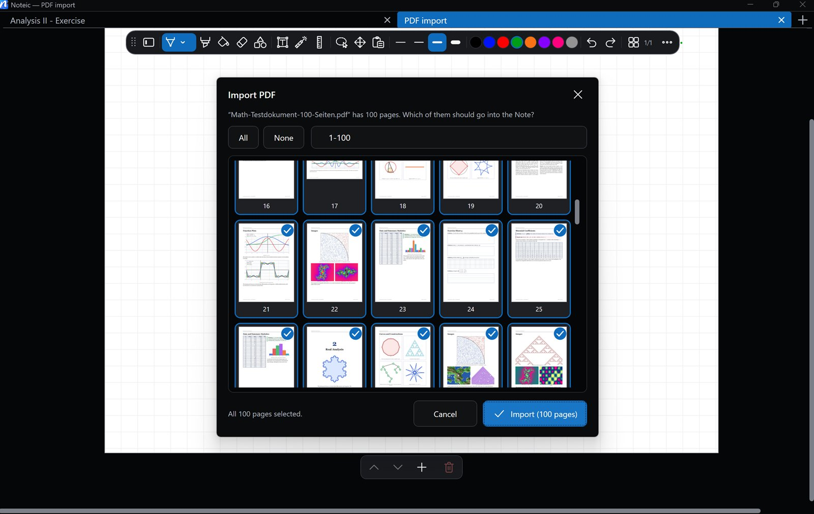

Bring lecture slides and worksheets into your notes, write right on them and export the result as a PDF.

Import a PDF#
- Save your note first, because the PDF is stored inside the note.
- Open … › Import PDF and choose the file.
- Pick the pages: tap pages to select them, use All and None, or type a range like
1-3, 7, 10-12. All pages are selected at first. - Tap Import.
The pages are added after the current page, each in its own PDF size. If the note only has one empty page, that page is replaced. You can undo the import.
New note from a PDF: in the library, right-click or press and hold a Chapter and choose Import PDF…. Noteic creates a new note named after the PDF.
Write on PDF pages#
The PDF is the page background: every tool writes on top of it. Use Extend page borders to add room around a PDF page; the paper style you pick fills the new area.
Export as PDF#
- Open … › Export as PDF.
- Pick the pages, or tap Only this page.
- Choose where to save. When it is done, Noteic offers to open the file.
The export is a vector PDF: sharp at any zoom. It contains your paper and patterns, imported PDF pages, images, ink, highlighter, fills, shapes, text, formulas and memo tape (covered).
Images#
- … › Insert image adds a PNG, JPG, GIF, BMP, TIFF or WebP file.
- Drag an image from File Explorer or from a website into your note.
- Paste an image from the clipboard with Ctrl+V.
Images are stored inside the note, so save the note first. Move, scale and rotate them with the lasso; Crop image in the selection bar crops without losing the original.